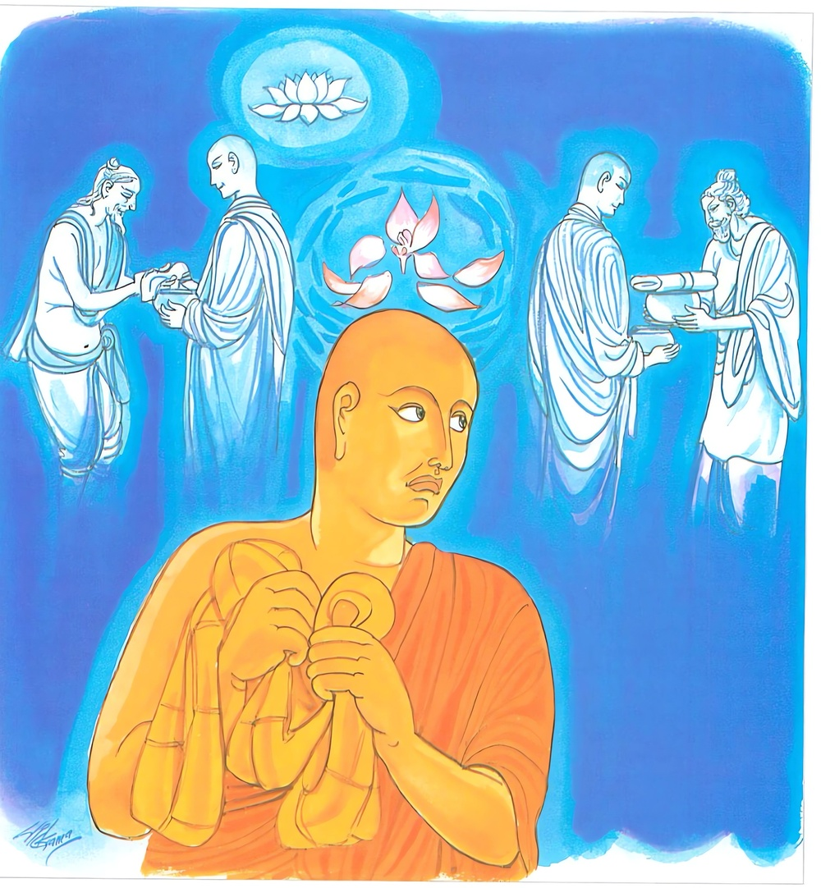
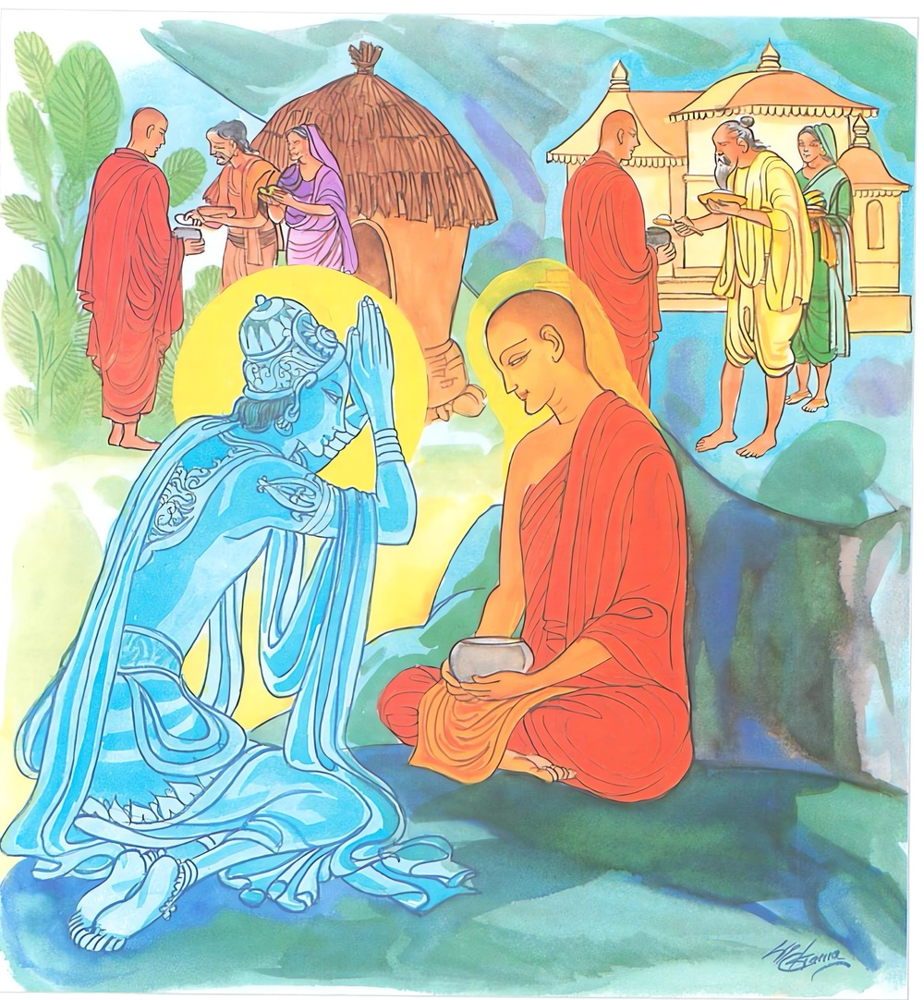

25-5 විපක්ෂසේවක භික්ෂූ නමක්
මෙම කතාව ධම්මපද අටුවාවෙන් ද කියවන්න.
සලාභං නාතිමඤ්ඤෙය්ය නාඤ්ඤෙසං පිහයං චරෙ
අඤ්ඤෙසං පිහයං භික්ඛු සමාධිං නාධිගච්ඡති.
ස්වකීය ලාභයට (තමා ලත් දැයට) අවමන් නො කරන්නේ ය. මෙරමාගේ ප්රණීත වූ ලාභය පතමින් නො හැසිරෙන්නේ ය. අනුන්ගේ ප්රත්යයලාභය කැමැති වන භික්ෂු තෙම සමාධියට නො පැමිණෙයි.

අප්පලාභො’පි චෙ භික්ඛු සලාභං නාතිමඤ්ඤති.
තං වෙ දෙවා පසංසන්ති සුද්ධාජීවිං අතන්දිතං.
ප්රත්යයලාභී නො වූ ද මහණ තෙම ඉදින් (ගෙපිළිවෙළින් සිඟා ලත්) තමාගේ ලාභය හෙලා නො දක්නේ ද, පිරිසිදු වූ ජීවිකා ඇති (ජඞ්ඝාබල නිසා ජීවත් වන බැවින්) අකුසීත වූ ඒ මහණහට ඒකාන්තයෙන් දෙවියෝ ද ස්තුති කෙරෙත්.

විපක්ෂසේවකභික්ෂු නමක්හට දේවදත්තපක්ෂයෙහි වූ මහණෙක් සහාය ව අත දී සිටියේ ය. ඒ දේවදත්තපාක්ෂික භික්ෂු තෙමේ, දවසක් අන්ය භික්ෂූන් හා රක් ව පිඬු සිඟා ගොස් බත් කිස අවසන් කොට එන තම යහළු වූ විපක්ෂ සේවක භික්ෂු නම දැක “කො තැනක ගියෙහි?”යි ඇසූයේ ය. පි”ඬු සිඟා යන්නට අසුවල් තැනට ගියෙමි”යි ඒ නම කී කල්හි “ඔබට පිණ්ඩපාතය ලැබුනේ දැ?”යි නැවැත විචාළේ ය. “එසේ ය, ලැබුනේ ය” යි ඔහු කී ය. එවිට දේවදත්තපාක්ෂික භික්ෂු තෙමේ “අපට නම් මෙහි ලාභ සත්කාර බොහෝ සේ ලැබෙන්නේ ය, කෑම් බීම්වලින් අපට කිසි ම අඩුවෙක් නැත, එක දවසට ලැබෙන බත්සැළි ගණන ම පන් සියයෙකි, එක් සැළියෙහි බත් දස දෙනකුට කාලා අවසන් කරන්නට නො හැකි ය, එහෙයින් කිහිප දවසක් අප හා මෙහි රැඳෙන්නැ”යි කී ය. ඔහු ද ඒ කීම පිළිගෙණ කිහිප දවසක් එහි නැවතී හිඳ තමන්ගේ ආවාසයට පෙරළා ගියේ ය. එකල්හි ඒ දුටු භික්ෂූන් වහන්සේලා බුදුරජුන් වෙත ගොස් “ස්වාමීනි! මේ මහණ, දෙව්දත්හට ලැබෙන ලාභසත්කාර එහි ගොස් රැඳී සිට වළඳන්නේ ය, මෙ තෙමේ දේවදත්තපාක්ෂිකයෙකැ”යි දන්වා සිටියහ. ඉක්බිති බුදුරජානන් වහන්සේ ඒ මහණහු ගෙන්වා “හැබෑ ද, මහණ! මේ නමලා කියන කාරණය?”යි අසා වදාළ කල්හි “ස්වාමීනි! එසේ ය, මම මාගේ යහළු එක්තරා මහණකු නිසා කිහිප දවසක් ඔවුන්ගේ පන්සලෙහි නැවතී සිටියෙමි, එහෙත් මම දෙව්දත්හුගේ ලබ්දිය රුචි කරන්නෙක් නො වෙමි, ඔහුගේ පාක්ෂිකයෙක් නො වෙමි”යි කියා සිටියේ ය. එකල්හි බුදුරජානන් වහන්සේ තමුසේ කොයිලෙසිනුත් උන්ගේ ලබ්ධිය රුචි නො කරන්නහු සැබෑ ය, එහෙත් දුටු දුටුවන් පස්සේ දුටු දුටුවන්ගේ ලබ්ධිය ගෙණ හැසිරෙන්නකු මෙන් හැසිරෙන්නහු ය, තමුසේ දැන් පමණක් ම මෙසේ කළහු නො වහු ය, පෙරත් කෙළේ මෙසේ ය”යි වදාළසේක. එවිට භික්ෂූන් වහන්සේලා “ස්වාමීනි! මේ මහණහුගේ අද සැටි අප විසින් ම දක්නාලද ය, පෙර එදා මොහු උන් උන් පස්සේ ගිය සැටි අපට වදාරණු මැනැවැ”යි ඇයද සිටියහ. එකල්හි බුදුරජානන් වහන්සේ,
“හොබනා මුව නමැති - ඇත්රජු සොරුන් බසසා,
කිපියේ කැකුළු වූයේ - සොරුබසට නැමුනේ වී.
කාවිසිමුනි තිදොර - රැකි සිල්වතුන් බසසා
මගුලැත් උතුම් සියලු - සත්ගුණ රැදී සිටියේ”
යි මහිලාමුඛජාතකය විස්තර විසින් වදාරා “මහණෙනි! මහණ තමන් ලත් ලාභයෙන් ම සතුටු විය යුතු ය, අනුනු අයත් ලාභය නො ද පැතිය යුතු ය, ඒ පැතීම නො සුදුසු ය, පරලාභ පතන්නහුට ධ්යාන විදර්ශනා මාර්ගඵල ධර්ම අතුරෙහි එක ද ධර්මයෙකුත් නො ද උපදනේ ය, තමන් ලැබූ ලාභයෙහි සතුටු වන්නහුට ම ධ්යානාදිධර්ම උපදනේ ය”යි වදාරා මේ ධර්මදේශනාව කළ සේක.
සලාභං නාතිමඤ්ඤෙය්ය නාඤ්ඤෙසං පිහයං චරෙ,
අඤ්ඤෙසං පිහයං භික්ඛු සමාධිං නාධිගච්ධති.
.
අප්පලාභොපි චෙ භික්ඛු සලාහං නාතිමඤ්ඤති,
තං වෙ දෙවා පසංසන්ති සුද්ධාජීවං අතන්දිතන්ති.
ස්වකීයලාභයට අවමන් නො කරන්නේ ය. අනුන්ගේ ලාභය පතමින් නො හැසිරෙන්නේ ය. අනුන්ගේ ලාභය පතන්නා වූ ඒ මහණ තෙමේ සමාධියට නො පැමිණෙන්නේ ය.
ලාභී නො වූ ද මහණ තෙමේ ඉදින් තමාගේ ලාභයට අවමන් නො කෙරේ ද පිරිසිදු වූ දිවිවැටුම් ඇති කුසීත නො වූ ඒ මහණහුට එකාන්තයෙන් දෙවියෝ ද පසසත්.
සලාභං න අතිවඤ්ඤෙය්ය - තමන් අයත් ලාභය පහත් කොට නො සිතන්නේ ය.
උස් පහත් කම් නො සලකා උස් පහත් කුලයෙහි ගෙපිළිවෙළින් හැසිර එක් විසි අනෙසනයෙන් තොර ව දැහැමි ව ලැබූ තමා අයත් මඳ වූ ත් බොහෝ වූ ත් රූක්ෂ වූ ත් ප්රණීත වූ ත් චිවරාදී වූ සිවු පසයට අවමන් නො කරන්නේ ය. යමෙක් උස් පහත් කුල පිළිවෙළින් හැසිර ලැබිය යුතු සිවුපසය හැරදමා එක් විසි අනෙසනයෙන් දිවිවැටුම් කරණුයේ තමන් ලත් සිවුපසයට අවමන් කරන්නේ නම් වේ. එහෙයින් ගෙවල දොර දොර සිට ලබන මොනතරම් දැයක් වුව ද එය පහත් කොට නො සැලකිය යුතු ය. එයට අවමන් නො කටයුතු ය.
න අඤ්ඤෙසං පිහයං චරෙ = අනුන් අයත් ලාභය පතමින් කැමැති වෙමින් නො හැසිරෙන්නේ ය.
අනුන්ට ලැබෙන අනුන් අයත් වූ බොහෝ වූ ත් ඇඟපතට දිවට හිත වූ ඇඟපත දිව පිණවන දැයට කෑදරකම් දක්වමින් අනුන් අයත් ඒ දැය පතමින් නො හැසිරෙන්නේ ය. නො හැසිරිය යුතු ය.
අඤ්ඤෙසං පිහයං භික්ඛු = අනුන්ගේ ලාභය පතන්නා වූ මහණ තෙමේ.
සමාධිං න අධිගච්ඡති = සමාධියට නො පැමිණෙන්නේ ය.
අනුන් අයත් ලාභයට කෑදරකම් දක්වමින් හැසිරෙණ මහණ සිවුරු මැසීම් ආදී කටයුතුවලට කරණ උත්සාහයකට මුත් උපචාර - අර්පණා - මාර්ග - ඵල යන මේ කිසිත් ගුණයකට නො පැමිණෙන්නේ ය. මේ කිසිත් ගුණයක් නො ලබනනේ ය. සමාධි විස්තරය යට කියන ලදී. [1]
අප්පලාභො අපි චෙ භික්ඛු සලාහං න අතිමඤ්ඤති = ලාභී නො වූ ද මහණ තෙමේ ඉදින් තමන් ලත් ලාභයට අවමන් නො කරන්නේ නම්.
ප්රණීත වූ චීවර - පිණ්ඩපාත - සෙනාසන - ගලාන ප්රත්යය යන සිවුපසය නො ලබණ මහණ ‘අප්පලාභ’ නම් වේ. එහෙත් මේ මහණ ගෙපිළිවෙළින් ගොස් රූක්ෂ - ප්රණීත විසින් තමන් ලැබූ දැයට අවමන් නො කරන්නේ ය. එය පහත් කෙට නො සලකන්නේ ය. ලද දෙයින් ම සතුටු වන්නේ ය.
තං වෙ දෙවා පසංසන්ති සුද්ධාජීවං අත්න්දිතං = පිරිසිදු වූ දිවිපැවැතුම් ඇති කුසීත නො වූ ඒ මහණහුට එකාන්තයෙන් දෙවියෝ පසසත්.
පිරිසිදු දිවපැවැතුම් ඇතියේ ‘සුද්ධාජීව’ නම්. මෙ තෙමේ කුලයන්ගේ උස් පහත්කම් නො සලකා ගෙපිළිවෙළින් පිඬු සිඟා ලත් දැයින් දිවි වැටුම් කරන්නේ ය. එහෙයින් “සාරජිවිකයා සුද්ධාජීවං” යනු අටුවාවව කීවා. මෙ තෙමේ ආජීවපාරිශුද්ධිශීලයෙන් සිල්වත් යි ගන්නේ ය.
සියලු ඉරියවුවල නො පසු බස්නේ, නො මැලි වූයේ අටවැදෑරුම් කුසීතවස්තූන්ගෙන් තොර වූයේ ‘අතින්දිත’ නම්. “ජඞ්ඝාබලං නිස්සාය ජීවිතකප්පනෙන අකුසීතතාය අතන්දිතං” යනු විසින් කීයේ ඒ ය. [2] ජඞ්ඝා බලය නිසා පිඬු සිඟා ගොස් ලැබෙන දැයෙන් දිවිවැටුම් කරණ සිල්වත් මහණහුගේ ජීවිතය පිරිසිදු ය. ආලෝකවත් ය. එබඳු මහණහුට දෙවියෝ බ්රහ්මයෝ යක්ෂයෝ රාක්ෂයෝ මනුෂ්යයෝ වඳිති, පුදති යනු එකාන්ත ය.
ධර්මදේශනාවගේ අවසානයෙහි බොහෝ දෙන සෝවන් ඵලාදියට පැමිණියාහු ය.
විපක්ෂසේවක භික්ෂුවස්තුව නිමි.